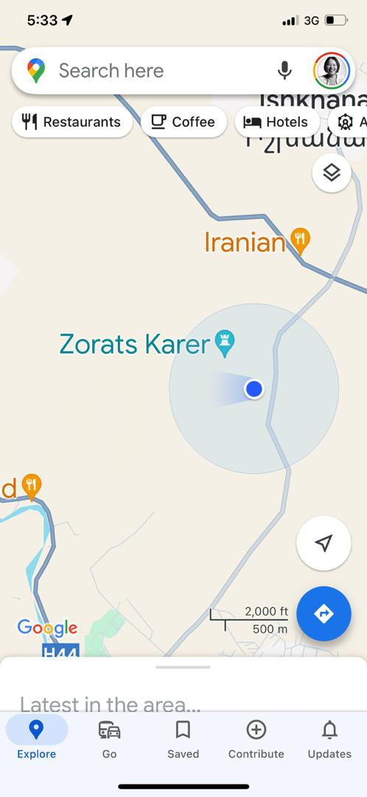
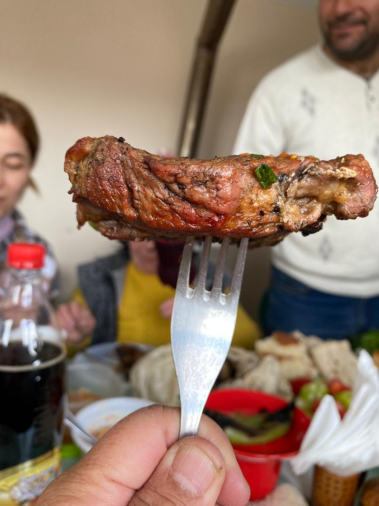
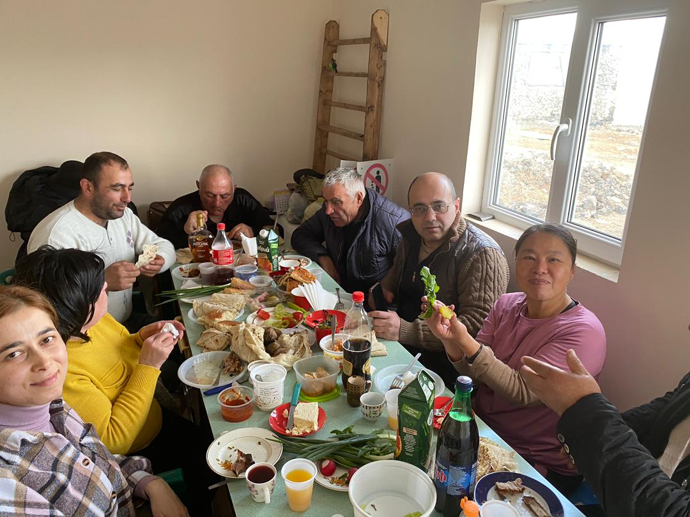

Real Story · 中文
早上开山路，我终于没有那么怕了。
08 March 2024，经过 Kajaran 的休息以后，我继续在 Armenia 前进。 我发现一个很重要的事情：如果早上开车，我没有那么怕 hairpin road 和高山路。 白天的光线让我比较能看清楚路，也比较能控制自己的恐惧。
这一天，我开去 Zorats Karer。 Karahunj，也叫 Zorats Karer，常被称为 Armenian Stonehenge。 它是 Armenia 很重要的 prehistoric site。 我当时带着一种 “终于可以看一点历史景点” 的心情过去。

Winter Mud
The stones were ancient, but the mud was immediate.
Because it was winter, the inner road around the area was muddy. Toyotaki got stuck in the wet mud. The staff suggested that I stay overnight and wait until the next morning, when the sun came up and the mud condition might become better.
So what was supposed to be a short visit became an unplanned overnight. In overland travel, sometimes a place does not only let you visit. It tells you: stay first.
Women’s Day
Accidentally joining a local feast.
That same day was Women’s Day. The staff were celebrating, and because I had to stay there anyway, I was invited to join their local feast.
This became one of those memories that only happens because something went wrong. If Toyotaki had not been stuck in the mud, I might have visited the stones and left. Instead, I sat with local people, shared food, and became part of their Women’s Day moment.


English Memory Summary
An ancient site, winter mud, and an unexpected Women’s Day.
On 08 March 2024, Tuzi continued driving through Armenia after recovering from the frightening first mountain climb. She realized that driving in the morning made the hairpin roads and high-altitude sections feel less frightening.
She drove to Zorats Karer, also known as Karahunj and often called the Armenian Stonehenge. Because it was winter, the road inside the area was muddy, and Toyotaki became stuck. The staff suggested that she stay overnight until the next morning, when the sun might improve the mud condition.
That same day was Women’s Day. The staff were celebrating, and Tuzi was invited to join the local feast. What began as a muddy road problem became an unexpected memory of Armenian hospitality.
Heart Statement
有时候车陷在泥里，不是旅程坏掉；是记忆要你留下来吃一餐。
I came for the stones. The mud made me stay. Women’s Day gave me a table.